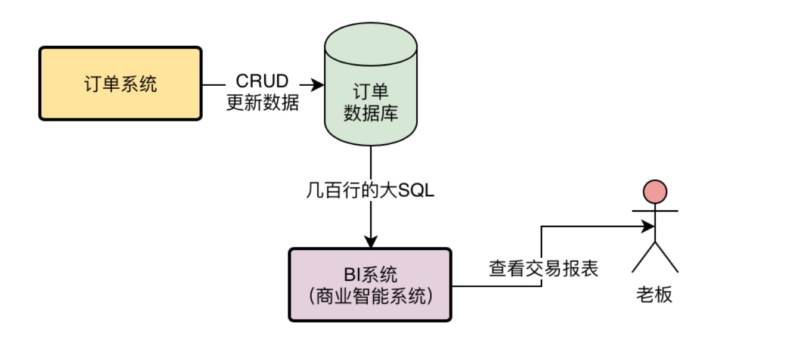
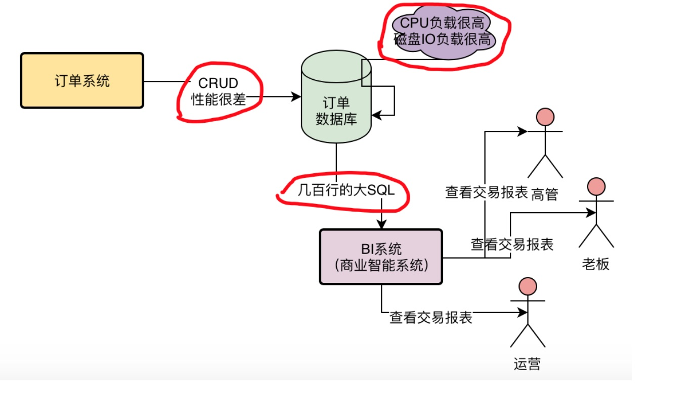

系统面临的现实问题：
大数据团队需要订单数据，该怎么办？—
1、高大上的大数据，不识庐山真面目
小猛早早的就来上班了，昨天吸收了明哥讲的关于系统和第三方系统耦合的问题，感觉真是意犹未尽。
小猛心里默默的感叹，虽然自己没能直接进入BAT等大厂去工作，但是至少能一毕业就来一个快速发展的互联网公司，在里面可以接触到真实的互联网系统架构面临的问题，感觉自己很幸运。
跟前两天一样，明哥一看到小猛，立马又把他拉到小会议室里去了。
今天明哥并没有一进会议室就唰唰画出来一张流程图，而是问了小猛一个问题：你知道我们公司的大数据团队是干什么的吗？
小猛一听就来兴趣了，兴奋的说，大数据啊，前几年就在国内火起来了，听着特别的高大上，还有现在人工智能啊之类的。
但是。。。大数据到底是干什么的？这个问题我还真的没考虑过，就是听着特别高大上，新闻都老说高端大数据什么的，连老家村子里的一些亲戚都听说过这个高大上的字眼。
明哥哈哈的笑了起来：你连大数据都不知道是干嘛的，还这么兴奋干什么呢！我今天来给你讲讲，大数据具体是干什么的，因为今天我们要讲的订单系统问题，是跟大数据团队有关系的。
2、大数据到底是干嘛的？
举个例子，咱们公司是做电商业务的，说白了就跟以前你老家门口的商店是一个性质。要准备很多的货物，然后在架子上陈列出来，然后村子里的人没事儿了就来逛一逛，看到喜欢的就放到购物框里去，最后拿到收银台那儿去结账。
我们现在有一个电商APP，很高大上的样子，其实本质是不是跟村门口的商店是一样的？
我们要在仓库里准备商品，然后我们要在APP里陈列商品，接着还得打广告吸引很多人来APP里看看。
如果有人看到喜欢的，就加入自己的购物车，最后对购物车下订单，跳转到支付系统进行结账，然后我们就通过物流公司把货物发送给用户了。
所以现在我们考虑一下，假设你要是这个电商公司的老板，你每天会想些什么事情？
首先，我每天去公司第一眼，必须得知道昨天一共卖了多少营业额！这个是我们公司运营至关重要的问题，因为我们必须不停的卖货，卖很多很多的货出去，营业额做的很高，才能养活公司几百个人。
但是光有营业额还不够，我还想知道昨天一共有多少个用户在我们这里购买了商品？一共有多少笔订单？每个商品分别卖了多少件？哪个商品是最火爆卖的最好的？我们的APP昨天有多少人打开了？打开APP的人里有多少人下订单购物了？
此外，我还想知道，我们昨天的毛利润一共有多少（就是营业额扣除掉商品本身的成本之后的毛利，如果你用毛利再减去公司运营的成本，比如300个员工的工资，公司房租、水电等等，再交完税，就是老板和股东的净利润了）？
还没完，我还得知道，昨天下订单购物的人里，老用户有多少人（就是以前在你这里注册过或者购物过的，这些算老用户）？新用户有多少人（就是第一次下载你的APP，注册之后立马就购物的用户）？
当老板知道这些数据之后，才能继续去考虑公司的运营策略。
比如老板拿到了用户量这个数据，觉得用户量还是太少了，要抓紧投放广告，多拉一些人来购物。
或者老板可能觉得爆款的商品太少了，大部分商品业绩平平，说明没有吸引消费者，那么就得多去选择一些符合用户喜好的爆款商品。
又可能老板发现很多人打开了APP，但是不知道为什么就是没下订单，那就得多放一些吸引人的商品在首页了。
因此，只要听明白了上面的这段描述，你一定就能理解什么是大数据，以及大数据团队是干什么的了。
很简单，上面说的老板要每天上班第一件事情要了解的那一大堆的数据，其实就是大数据，只不过互联网公司跟村门口的小卖铺有一点区别。村里的小卖铺只要服务好村里100多个人就可以了，但是我们作为一个面向互联网的电商APP，要服务的是100万用户。
所以每天如果有100万用户来访问你的APP，积累下来的一些浏览行为、访问行为、交易行为都是各种数据，这个数据量很大，所以你可以称之为“大数据”
反之，如果一个村口的小卖铺的老板，自己积累下来每天100个用户的行为和交易在一个笔记本上，其实那也是数据，但是那数据量很小，就是“小数据”。
接着再来说大数据团队是干什么的？
大数据团队每天要负责的事情，说白了就是去尽可能的搜集每天100万用户在你的APP上的各种行为数据。
比如用户搜索了什么东西，点击了什么东西，评论了什么东西。还有就是搜集用户在APP里的交易数据，比如最核心的一种，就是我们的订单数据。
订单数据就直观的代表了用户在APP里的所有的交易。
然后大数据团队搜集过来大量的数据之后，就形成了所谓的“大数据”。接着他用这些大数据可以计算出很多东西。
最常见的就是数据报表，比如说用户行为报表，订单分析报表，等等。这些数据报表都是提供给老板来看的。
这就是所谓的“大数据”和大数据团队干的事儿。
小猛听的目瞪口呆，他觉得明哥简直帅呆了，把大数据解释的如此直白，浅显易懂。
照这个理论来解释大数据，他下次过年回家都可以跟村口开小卖铺的老大爷解释什么是大数据了。
其实村口老大爷每天在自己的笔记本上记录的店铺的各种经营情况，也是数据，只不过量太小了，所以是“小数据”。高大上的大数据，本质上也是这个意思！
3、大数据团队跟我们订单团队有什么关系？
接着小猛突然一个机灵，从自己跟小卖铺大爷解释大数据的白日梦中惊醒了。
他问明哥：说了半天这个大数据，那他跟我们订单系统有啥关系啊？
明哥微微一笑：听到这里你还没反应过来吗？
小猛有点不好意思，稍微沉思了一下，瞬间脑子就明白过来了。对啊！大数据团队的职责不就是搜集各种各样的数据吗？那其中也包含我们的订单数据啊！他们需要分析每天几十万个订单，从中提取出老板最关系的APP交易数据报表！
明哥很高兴的说道：对了，你的反应很快，就是这个意思。
但是明哥叹了一口气，唉，不过现在这也就是我们订单系统面临的另外一个问题，大数据团队从我们这里提取数据，已经严重影响到我们订单系统的运行了。
4、最low的做法：直接从订单库里select数据出来
明哥接着说，现在大数据团队也是公司刚刚成立的，各种基础组件都没搭建好，但是老板要一些数据实在太着急了，所以现在你知道大数据团队在订单这块的一些交易报表，是怎么跑出来的吗？
小猛木然的看着明哥，摇摇头。
明哥继续说道：现在我们的订单数据库，是直接对外暴露的，大数据团队是直接可以访问我们的订单数据库的。
他们有一个数据报表系统，那个系统每次在老板查看交易报表的时候，就会直接用一个几百行的大SQL，从我们的订单数据库里查出来需要的数据！
明哥说着在小白板上画出了一个示意图。

你看这个示意图，很快就明白怎么回事了。
小猛这个时候还是木然的看着明哥，说道：那人家查就查吧，对我们能有什么影响？毕竟老板要看，我们也只能这样啊。
明哥惊讶的看着小猛：看来你还年轻，不知道这种几百行大SQL的恐怖威力啊！
5、几百行的大SQL直接查线上库的危害
明哥接着解释道：首先你要知道一点，我们的订单数据库里的数据量是很大的，最开始每天APP就几百个订单，到现在每天小几十万订单，我们每个月都新增千万级订单数据。
现在表里已经有的订单都有千万以上了，我们毕竟是最近几个月才发展起来的，所以历史数据没那么多。
但是每天新增几十万订单，数据增长是很快的，如果我们不对数据库架构做一些重构，很快单表上亿数据，基本系统运转就困难了。
其次，就以我们现在数据库里千万级数据来说，每次老板要看交易报表的时候，数据报表系统运行一个几百行的大SQL到我们库里，这种级别的SQL在这种量级下，快则三五秒，慢则几十秒！
明哥说到这里停顿了一下，看着小猛。
结果小猛还是没什么反应，他心想，几十秒的话，也最多就是报表查询速度慢点而已，跟我们有什么关系？
明哥接着解释，但是这种几百行的大SQL执行是非常消耗CPU的，对磁盘IO的负载也是很重的，尤其是每天不止老板一个人要看数据报表，这个报表系统是对公司开放的，包括副总，高管，中层经理，运营，产品经理，全公司几十个人都会看这些报表。
每次当有几十个几百行的大SQL同时运行在我们订单数据库里的时候，都会导致我们的数据库CPU负载很高，磁盘IO负载很高！
一旦我们的数据库负载很高，直接会导致我们的订单系统执行的一些增删改查的操作性能大幅度下降！
小猛这个时候才梦然醒悟，他看着明哥在图里又增加了几笔，瞬间就搞明白里面的厉害关系了。

搞了半天，昨天我在工位上做笔记的时候，听到旁边的师兄抱怨说，怎么订单系统的接口突然性能又下降了，原来就是因为有好多人在查看数据报表，结果几十个几百行的大SQL运行在我们订单数据库啊！
小猛同情的看着明哥，心想：唉，老大真是太不容易了，又不能不让老板看报表，但是最后数据的计算压力居然都落在订单系统身上了，真是不容易啊！
小猛跟明哥说：明哥，今晚我回去一定好好梳理这个大数据团队强加给我们的技术难题，好好思考一下该怎么解决！